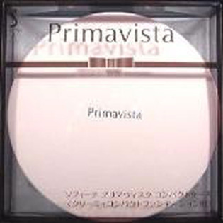

返回列表
产品名称：プリマヴィスタ コンパクトケース＜クリーミィコンパクトファンデーション用＞

花王 プリマヴィスタ コンパクトケース＜クリーミィコンパクトファンデーション用＞ １個
メーカー 花王
JANコード 4901301236456
商品の特徴
ソフィーナ プリマヴィスタ クリーミィコンパクトファンデーション用のコンパクトケースです。
2段タイプ
成分・分量
-
用法及び用量
＜使用方法＞
○レフィルの容器から中皿を取り出し、コンパクトケースにセットしてお使いください。
○中皿を取り出す時は、コンパクトケース底の穴をピンなどで押して、取り出してください。